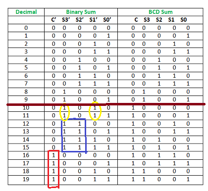
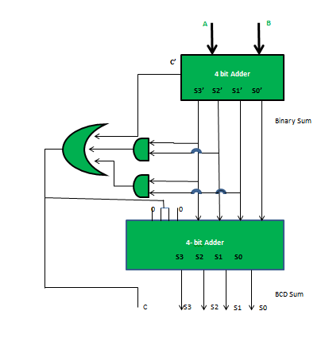

BCD stand for binary coded decimal. Suppose, we have two 4-bit numbers A and B. The value of A and B can varies from 0(0000 in binary) to 9(1001 in binary) because we are considering decimal numbers.

The output will varies from 0 to 18, if we are not considering the carry from the previous sum. But if we are considering the carry, then the maximum value of output will be 19 (i.e. 9+9+1 = 19).
When we are simply adding A and B, then we get the binary sum. Here, to get the output in BCD form, we will use BCD Adder.
Example 1:
Input : A = 0111 B = 1000 Output : Y = 1 0101 Explanation: We are adding A(=7) and B(=8). The value of binary sum will be 1111(=15). But, the BCD sum will be 1 0101, where 1 is 0001 in binary and 5 is 0101 in binary.
Example 2:
Input : A = 0101 B = 1001 Output : Y = 1 0100 Explanation: We are adding A(=5) and B(=9). The value of binary sum will be 1110(=14). But, the BCD sum will be 1 0100, where 1 is 0001 in binary and 4 is 0100 in binary.
Note – If the sum of two number is less then or equal to 9, then the value of BCD sum and binary sum will be same otherwise they will differ by 6(0110 in binary).
Now, lets move to the table and find out the logic when we are going to add “0110”.

We are adding “0110” (=6) only to the second half of the table.
The conditions are:
- If C’ = 1 (Satisfies 16-19)
- If S3′.S2′ = 1 (Satisfies 12-15)
- If S3′.S1′ = 1 (Satisfies 10 and 11)
So, our logic is
C' + S3'.S2' + S3'.S1' = 1
Implementation :

Read related articles: BCD to 7 Segment Decoder, BCD(8421) to/from Excess-3